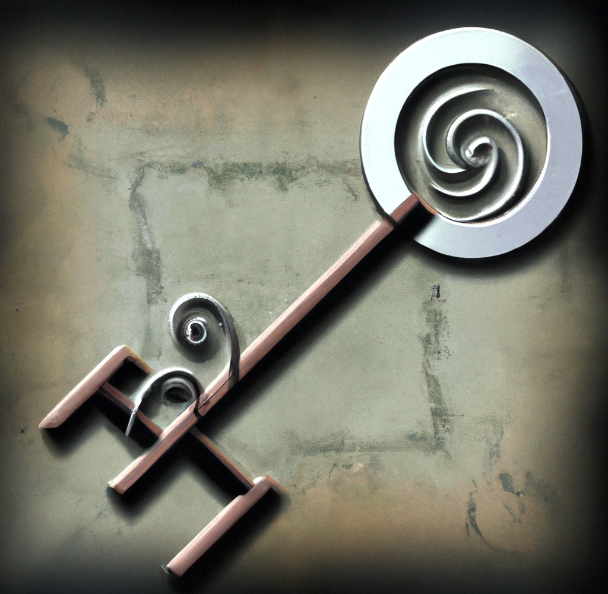

ICPC World Finals 2021 · Problem B
Alice and Bob are in charge of testing a new escape room! In this escape room, customers are trapped in a dungeon and have to explore the entire area. The dungeon consists of n rooms connected by exactly n−1 corridors. It is possible to travel between any pair of rooms using these corridors.
Two of the dungeon rooms are special. One of these rooms contains a protective idol known as the “helix key.” A different room contains a nasty “dome trap,” which prevents the player from moving once activated. Entering the room with the trap before acquiring the key will result in the player being trapped in the dungeon forever. The player cannot start in the same room as the key or the trap.

There are q different scenarios that Alice and Bob wish to examine. In the ith scenario, the player starts in room si, the key is in room ki, and the trap is in room ti. For each scenario, compute the minimum amount of time needed to explore the entire dungeon without getting trapped.
The first line of input contains two integers n and q, where n (3 ≤ n ≤ 2 000) is the number of rooms and q (1 ≤ q ≤ 200 000) is the number of scenarios to consider. Rooms are numbered from 1 to n. The next n − 1 lines each contain three integers u, v, and w indicating that there is a corridor between rooms u and v (1 ≤ u, v ≤ n, u ≠ v) that takes time w (1 ≤ w ≤ 109) to traverse.
Then follow q lines: the ith of these lines contains three distinct integers si, ki, and ti (1 ≤ si, ki, ti ≤ n) indicating the room where the player starts, the room with the key, and the room with the trap, respectively.
For each scenario, output the minimum amount of time needed to visit every room at least once. If it is impossible to visit every room at least once, output impossible.
5 4 1 2 3 1 3 1 3 4 4 3 5 2 1 2 4 1 4 2 5 2 1 4 3 1
15 17 impossible 12
7 4 1 2 1 1 3 1 1 4 1 1 5 1 1 6 1 1 7 1 1 2 3 5 4 1 3 1 4 2 4 5
11 impossible 10 10